Student Organization Proposal
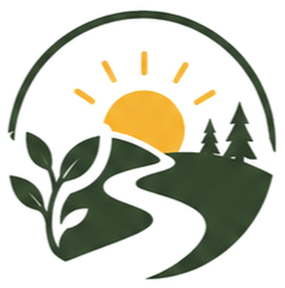
Brighter Trails
A B.R.I.G.H.T. Student Organization
Environmental stewardship through student leadership and community action.
Prepared by the Brighter Trails Core Group · In affiliation with Trash Free Trails (TFT) · September 1, 2026
Before we talk about an organization
What's one value that already connects B.R.I.G.H.T. Academy and environmental stewardship?
ACADEMY
ENVIRONMENT
A shared responsibility
The answer: SDGs — the Sustainable Development Goals
The UN's 17 Sustainable Development Goals are the framework schools worldwide are asked to teach toward. Three SDGs connect B.R.I.G.H.T. and environmental stewardship directly.
Quality Education
Target 4.7 — education that builds the knowledge and skills for sustainable development.
Life on Land
Protecting trails, mountains, and natural spaces — beyond the coast.
Partnerships for the Goals
Cross-sector partnership between students, school, and TFT.
The bridge
"If education is meant to build responsible, capable people, environmental stewardship can become part of that education."
Not a separate obligation. An extension of what school is already for.
The opportunity
Students already know. Most already care. Few get to keep acting.
Know
Environmental lessons in the classroom
Care
Awareness turns into concern
Act
An occasional activity, one day at a time
Continue
The missing piece — recurring, lasting practice
Why "continue" matters
8–11 million tonnes
of plastic enter the world's oceans every year — and the Philippines is home to seven of the world's ten most plastic-polluted rivers.
Sources: 2026 ocean-plastic trackers (Our World in Data, Ocean Blue Project); river plastic-emissions research cited in Philippine environmental reporting
Our solution
Our solution to that gap is Brighter Trails
Turning environmental education into recurring, hands-on action — not a one-day activity, but a lasting practice.
How we'll walk through this
Eight stops on the trail
01 — Foundation
"We're not starting
from zero."
At real TFT Cebu cleanups, B.R.I.G.H.T. students haven't just shown up — they've regularly made up the majority.
Source: Trash Free Trails registration data
The basics, first
What Brighter Trails is — and who we'd run it with
Brighter Trails
A student-led environmental organization that organizes cleanup and restoration activities in natural spaces, develops student leadership, and builds community stewardship.
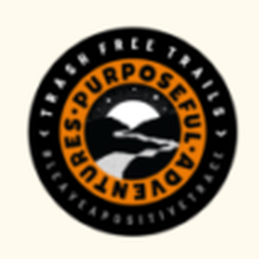
Trash Free Trails (TFT)
An established global environmental movement — a registered non-profit protecting trails and natural spaces through a "Do It Ourselves" (DIO) approach, operating as a "Community of Communities."
We operate in line with TFT — using their proven frameworks and resources, while keeping full autonomy in planning and execution.
Trash Free Trails (TFT)
An established global movement, not a startup idea
TFT's own track record — the resources and standards we'd be operating under.
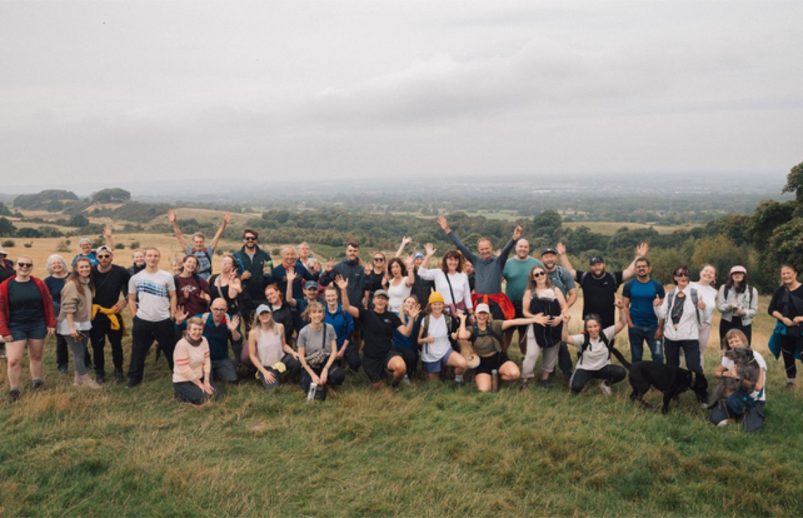
Trash Free Trails — a global "Community of Communities," not just us.Our local connection
An authorized partner, not a loose association
We operate in direct partnership with Trash Free Trails Cebu, led by Sem Kim, who serves as our Strategic Advisor — guiding organizational decisions, ensuring TFT standards, and opening doors to TFT's resources.
- Host cleanups under TFT's proven framework
- Operate with full authority in TFT's name
- Follow TFT's safety & citizen-science standards
- Retain full autonomy in planning & execution
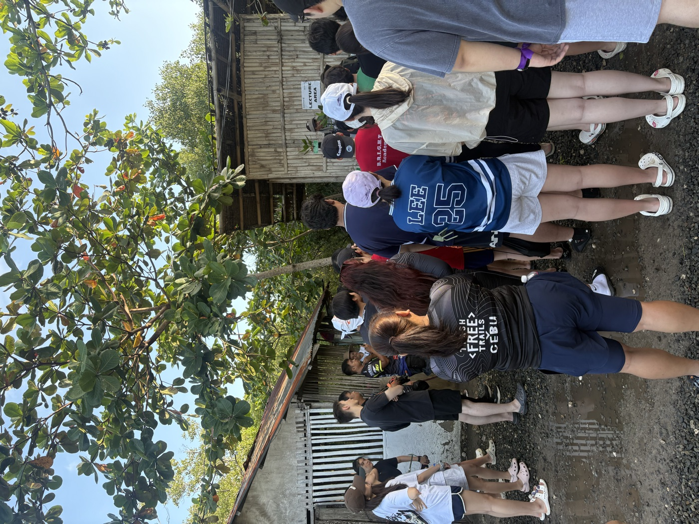
Our own students, in TFT Cebu gear, at a real briefing.Credibility and access — without giving up student ownership.
02
Philosophies
The philosophy, in three parts
Three Core Pillar Philosophies of Brighter Trails
Student Leadership & Development
Students plan, lead, and carry real responsibility — from idea to execution.
Real Environmental Action
Restoration and citizen-science data, not just removal.
Transformation & Lasting Change
Built to outlast any single year, event, or student.
Part one
Student Leadership & Development
Students conceptualize, recruit, and lead — from planning through execution.
Leadership, public speaking, and logistics grow as a byproduct — not the point.
No experience required. Participation comes first; skill follows.
Part two
Real Environmental Action
We remove waste, but we also restore and appreciate the places we visit.
Extending B.R.I.G.H.T.'s coastal cleanup tradition to trails, mountains, and uplands.
Citizen-science reporting connects naturally to Biology, DRRR, and Chemistry.
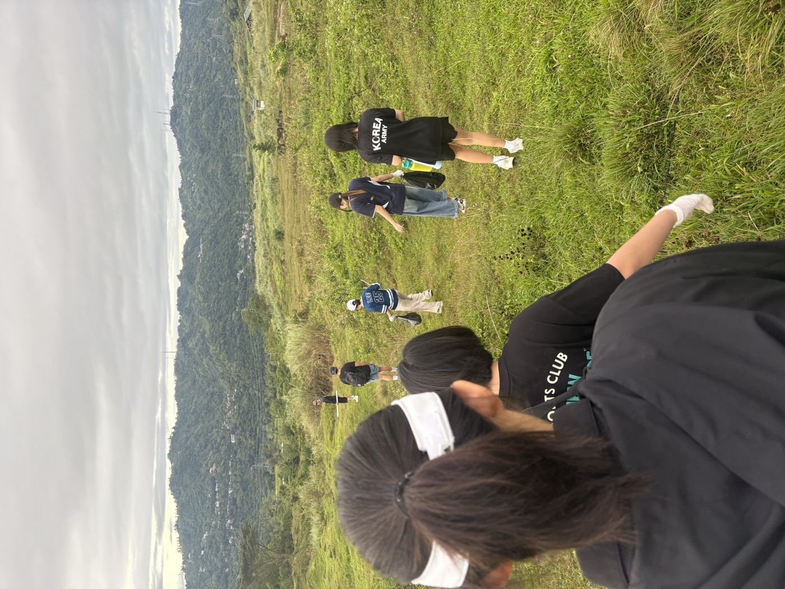
Trail cleanup, Kanirag Mountain — beyond the coast, in practice.Part three
Transformation & Lasting Change
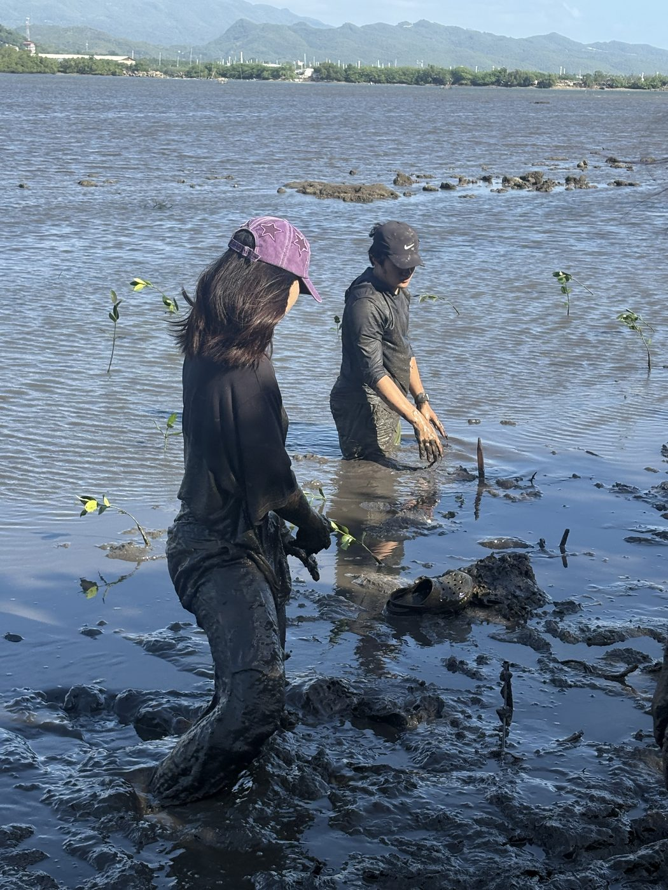
Mangrove planting, Danao — a shared, memorable experience.Stewardship should be enjoyable, not just dutiful.
Mentorship and handover so each cohort improves on the last.
Time outdoors as a break from screen-heavy, scheduled school life.
03
Organizational Structure
The core group
Who's already in place
| Role | Name | Focus |
|---|---|---|
| Executive Director | Bogue Kwon (12A) | Vision, strategy, partnerships |
| Event Coordinator | Haeun Kang (11B) | Trail cleanup planning & logistics |
| Community Manager | Hamin Park (12B) | Recruitment & outreach |
| Finance & Operations Manager | Yong Joon Kim (12A) | Budget & procurement |
| Flexible Contributor | David Heo (11B) | Social media, event-day support, data |
| Strategic Advisor | Sem Kim — TFT Cebu | Guidance, standards, TFT access |
Roles set ahead of our first TFT cleanup — open to adding roles as the team grows.
Organizational structure
How It Works
Core Student Leadership
Sets direction, coordinates projects, maintains the organization
Project Leads
Own individual initiatives, assemble temporary working teams
Members & Volunteers
Participate in activities, support event execution
School Contact
A clear channel for school-related questions & coordination
TFT Connection
Established framework, community, tools & opportunities
Where the school fits
A collaborative partnership, not a hand-off
Students lead and carry operational responsibility. The school isn't expected to plan or run activities — but its guidance matters at every stage.
- Provide a designated school contact
- Help us understand procedures — transportation, consent, off-campus activities
- Guide us to the right office or process
- Review our proposals and share feedback
- Communicating in advance about major activities
- Following all applicable school procedures
- Staying open to adjustments that fit B.R.I.G.H.T.'s existing framework
04
Projects We're Planning
Four initiatives, each independent
Projects we hope to run this year
TFT Cleanup Activities
2–3 initiatives — the anchor program, at trails, mountains, and parks.
Planting & Restoration
1 activity, if a suitable site and opportunity line up.
School Environmental Activities
On-campus stewardship, where welcomed by the school.
Community Fun Run
Feasibility, route, and timing still being reviewed.
Each can move forward, adjust, or pause independently — the plan doesn't depend on all four succeeding at once.
Program 01
TFT Cleanup Activities
Student-organized removal of litter and debris at trails, mountains, upland areas, and parks — beyond the school campus.
Key considerations → transportation, site risk, weather, participant age, consent, first aid.
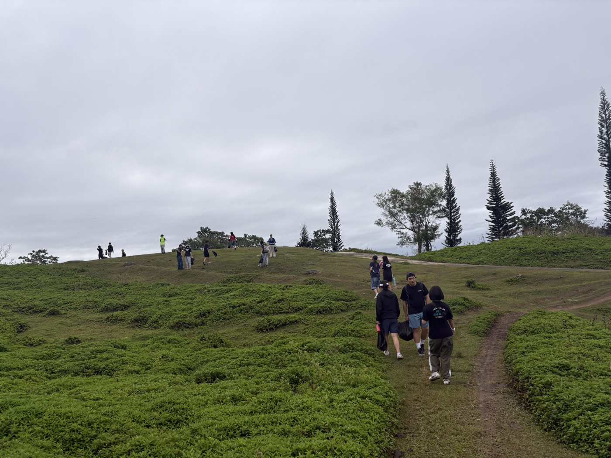
An upland trail cleanup we've already run.Program 02
Planting & Restoration Initiative
Gives students a longer-term, visible connection to a place they help care for — restoration, not just removal.
- Locations: school grounds, cleanup sites, nearby parks
- Considerations: site suitability, permissions, aftercare
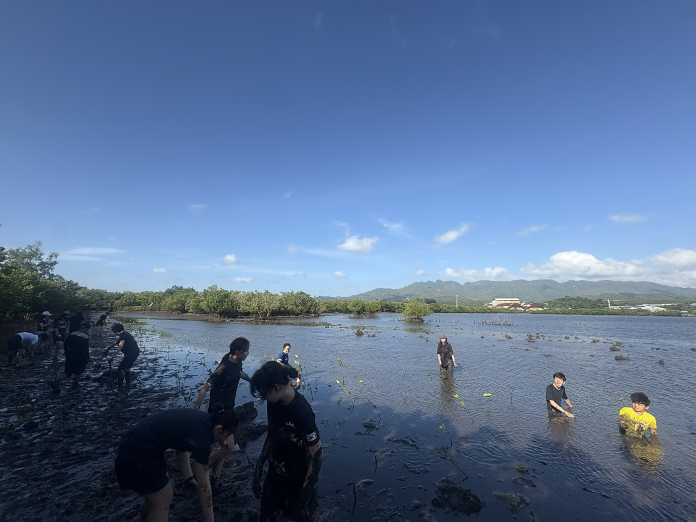
Mangrove planting, Danao — already run once.Exploring — two possibilities
Two more projects we're exploring
School Environmental Activities
On-campus cleanup support — e.g. after Family Day or Sports Fest. Not a mandatory school-wide schedule; just visible stewardship in everyday school life.
Community Fun Run
A community running event first, with a clear environmental purpose — not a novelty "trash-picking run." Depends on route, permits, funding, and calendar.
TFT already runs this model globally through Trash Free Races — "Nothing is left behind. At best, the place is cleaner because you were there."
05
Being Prepared
A quick, honest look at risk, cost, access, and how we'd know it's working — not the point of the proposal, but proof we've thought it through.
What could go wrong, and our plan
Risk & Safety
| Risk | Likelihood / Impact | Planned mitigation |
|---|---|---|
| Injury or accident | Medium / High | Pre-event risk assessment, consent, first aid on hand |
| Weather / site conditions | Medium / High | Pre-event check, rain-date or alternate plan |
| Low turnout | Medium / Medium | Early recruitment, peer referral, right-sized events |
If something does happen: the on-site Event Lead responds first, the Executive Director and school contact are notified immediately, and TFT's insurance-backed risk framework covers the rest.
Access is kept simple too — open across grade levels where the activity allows, grouped into smaller teams, with consent and waivers handled per activity.
How we'd fund this
Cost & Funding
Not asking for a standing budget — each event carries its own funding plan, built once location, transport, and participant count are known.
Voluntary contributions
Simple, event-specific, kept reasonable.
Seed funding
Small, short-term startup costs only.
Sponsorships
For larger events like the fun run.
TFT / transport support
Existing transport & TFT-specific resources.
We'll bring specific, real budgets per event — not speculative numbers today.
06 — Timeline
The year, mapped out
Pilot trail cleanup — completed
Ran before recognition, proof the model already works
Finalize proposal & recognition
School review and student-team refinement
Confirm roles, begin recruitment
Student appointments and communications plan
First TFT cleanup
Site, transport, and safety planning
Fun run concept & feasibility
Route, permissions, resources, funding plan
Second TFT cleanup
Suitable opportunity and event planning
Planting / restoration activity
Suitable site and restoration opportunity
End-of-year review
Outcomes, lessons, handover to next leadership
How we'd know it's working → attendance, waste collected, and a quick survey after every event, feeding straight into the next one.
This isn't just a proposal
A track record, not a hypothesis
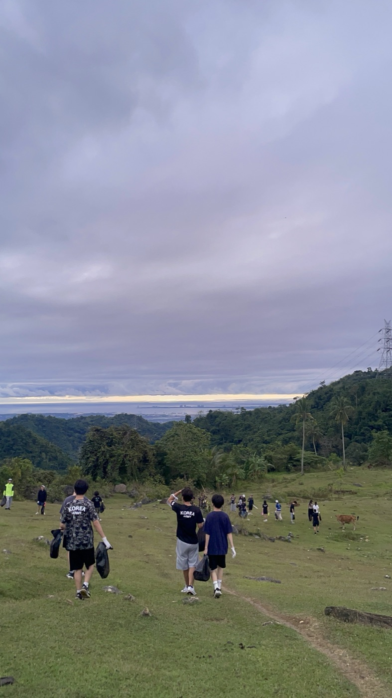
Carrying it out — literally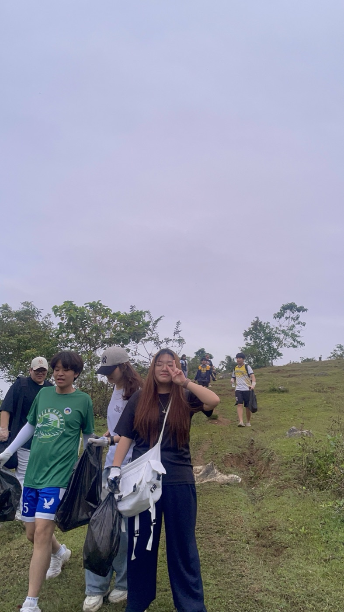
A full bag, our first cleanup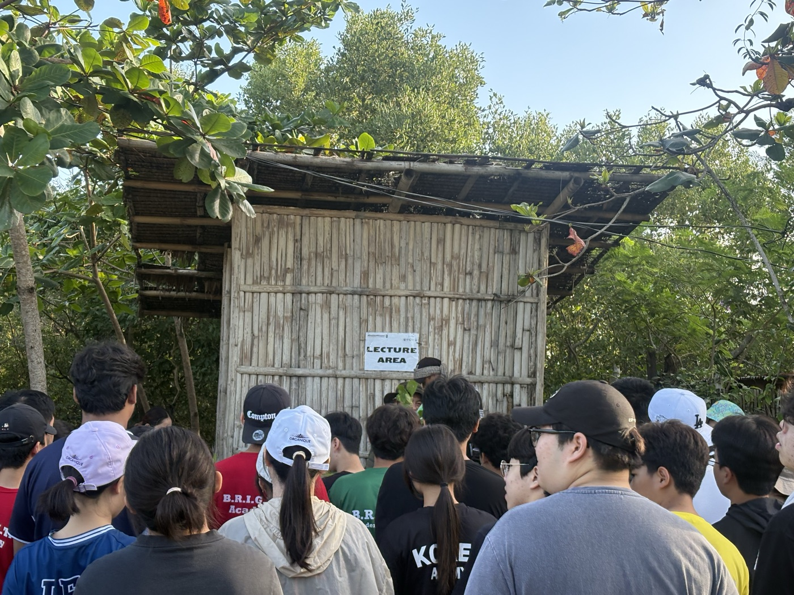
Safety briefing, live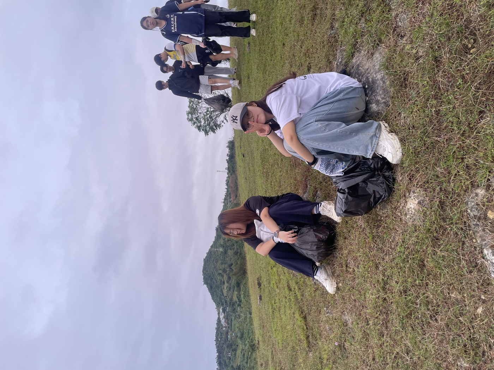
Between the workOur first trail cleanup ran November 15, 2025. When a typhoon threatened Cebu ahead of a mangrove planting activity, we postponed it and issued full refunds to every registered participant — the same risk protocol from a few slides ago, already lived, not hypothetical. At our last two TFT Cebu cleanups, B.R.I.G.H.T. students made up the majority of everyone there. Recruitment is active and ongoing.
What we need from you
Official recognition — a formal place within the school
- Recognition as an official B.R.I.G.H.T. student organization
- A designated school contact for coordination
- Guidance on procedures — transportation, consent, off-campus activities
- Review and feedback on our activity proposals
- Flexibility to adapt the plan as the year unfolds
Everything else — the plan, the partner, the team — is already in place.
Closing note
"This could become part of B.R.I.G.H.T. culture. Something students remember. Something future cohorts inherit and build on."
We welcome your guidance, your input, and your partnership as we make this happen.
We asked what connects B.R.I.G.H.T. Academy and the environment. This is our answer.
Brighter Trails starts here.
Bogue Kwon · Haeun Kang · Hamin Park · Yong Joon Kim · David Heo — Thank you.
Do you have any questions?
Bogue Kwon · Haeun Kang · Hamin Park · Yong Joon Kim · David Heo